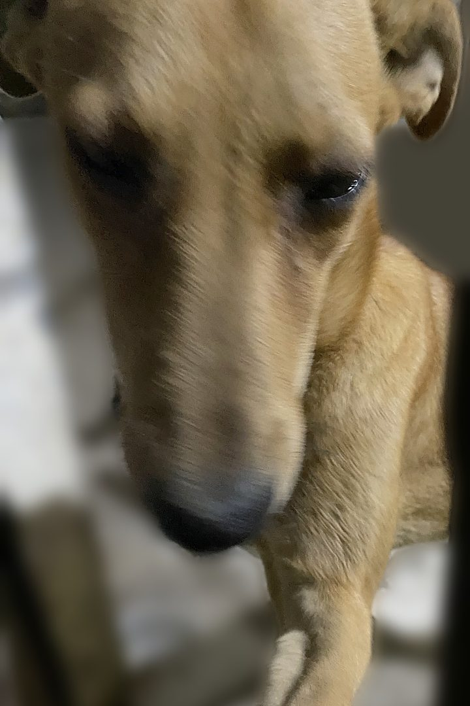

About
Investigating animal crime across Egypt and the MENA region.

Laws that protect animals are on the books. How far they are applied is rarely measured.
Animal Crime Bureau (ACB) is an independent legal investigation organization. It documents crimes against animals and measures how the law is applied against the standard the law itself names.
Standards
- Every legal finding cites the published text of the law.
- Every publication carries a reference number.
- Recommendations are addressed to the authority with the power to act.
- Corrections are dated and recorded on the publication they amend.
Contact
info@animalcrimebureau.org